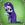

|

DigiSim
Author of 7 Stories |
Scenes from Nerima 4
The DigiSim Files
The following fic was actually started by Dkun then continued by Gregg Sharp and after that, Stephen Schlueter. I don't really know how to get in contact with any of them and I hope that by writing this I'm not stepping on anyone's toes. Keep in mind these are bloopers and outtakes as well as behind-the-scenes footage that was never meant to be seen. It shows that even anime actors and actresses are still human, well sort of.
"Here's Ranma" Revelation Scene Take 1
Tendo Sisters: FIANCE!
Nobody says anything afterwards. The silence continues to stretch.
Director (off-camera): Damn it Soun, that's your cue!
Soun (wiggling both index fingers in his ears and trying to pop them): What did you say? I think I've gone deaf.
Director (sighs): Could someone get Soun a Q-tip.
Revelation Scene Take 12
Soun: Recently he and his father returned from a trip to China.
Nabiki: Ooh, China.
Akane: What's so great about walking to China?
Nabiki (looking at Akane): Why don't you ask Sister Christian over there? (points her thumb at Kasumi)
Everyone on set stares at Nabiki.
Nabiki: What? Somebody had to say it sooner or later.
Revelation Scene Take 15
Kasumi: I hope he's younger than me. I like breaking in virgins.
Everyone on set stares at Kasumi.
Kasumi: That's not the line, is it?
Everyone in the studio, including the union workers, facefault.
Revelation Scene Take 16
Kasumi: I hope he's not younger than me. Younger men are so...line?
Everyone facefaults again.
Revelation Scene Take 18
Nabiki (holding one of Ranma-chan's breasts): Does this look like a boy to you?
Ranma-chan: If you're going to do that, you should at least buy me dinner first.
Akane and Kasumi crack up.
Revelation Scene Take 20
Nabiki: Does this look like a boy to you?
Ranma-chan (gets a sultry look on her face and moans seductively): Oh Nabi-chan, I didn't know you liked me so much. Let's get naked right now.
Nabiki: GAAH! (yanks her hand away from Ranma-chan's breast)
Soun and Genma-panda join in the laughter.
Director (sounding agitated): Enough fooling around!
Furo Scene Take 3
Ranma: Maybe I should just go out like this?
Ranma stands up and places his foot on the tile floor. The tile is wet and he slips backwards, cracking his head against the wall and slides back into the furo.
Director (sounding panicked): MEDIC!
Furo Scene Take 10
Ranma: Maybe I should just go out like this?
Ranma stands and places his foot on the tile floor. The door slides open and there stands a nude Akane.
Akane's eyes roam over Ranma's naked form before she drops to her knees, clasps her hands in prayer and looks up to the ceiling.
Akane (shouting): Thank You God, Thank You!
Everyone within earshot laughs.
Director (sounding exasperated): Oh hell.
Furo Scene Take 13
Ranma and Akane stare at each other. Ranma fully steps out of the furo while Akane crosses over to him. They embrace and start to make out right away.
Director (now pissed): DAMN IT ALL, STOP THAT! You're brother and sister for crying out loud!
Ranma and Akane (looking at the director): So?
Nabiki (heard off-camera): I wish Ranma was my brother.
Kasumi (also off-camera): I agree with you. His name sure suits him too.
Director: Someone get me some Pepto-Bismol.
Fearful Scream Take 1
Akane takes a big breath then starts coughing.
Akane: Could I get some water please?
Fearful Scream Take 4
Akane starts screaming while the camera zooms in on her face. The camera keeps going and Akane gets smacked into the door, knocking her unconscious.
Ranma and Director (sounding panicked): MEDIC!
Panicking Akane Take 1
Akane: There's a pervert in the bathroom!
Nabiki: How can that be? You're out here.
Akane: Oh ha freaking ha Nabiki.
Panicking Akane Take 7
Akane: There's a pervert in the bathroom!
Nabiki: Why didn't you take care of him?
Akane: Because I couldn't find daddy's condoms!
Soun: That reminds me, I'll need to stock up before I go to Soap Land.
The director facefaults.
Introductions Scene Take 2
Soun: This is my good friend…
Genma: Gendo Ikari and this is my son…
Ranma: Shinji.
The Tendo sisters crack up.
Director (mumbling quietly to himself): My mom said I should be a C.P.A. but I said no. I wanted to be a director. What was I thinking?
The scene opens in an ice skating rink. Akane and Ranma are standing around when a loud explosion is heard. A far-off wall explodes and a purple-haired girl is revealed. She coughs and falls over in a faint.
Prop-Man: I think I used too many explosives.
Everybody but Shampoo: You think?
The same rink. The same explosion reveals the same purple-haired girl.
Shampoo: Aiyaa! Ranma take Shampoo on date?
Ranma: Shampoo, that's far later in the series. You're not supposed to fall for me till I beat you. Besides, I'm already banging Akane.
Shampoo (looking miffed): Oh Crap Merry Christmas!
The Tendos, the Amazons, the Saotomes and Ryoga are all seated around a round table eating lunch and going over their scripts. Akane looks up and glares at Ryoga.
Akane: God Ryoga, how can you just sit there and shovel ham salad down your throat like that? Isn't that like cannibalism? It's disgusting.
Ryoga (looking up): Just because I turn into a pig doesn't mean I'm going to change what I eat. It doesn't really bother me anyway.
Genma: He's got a point. Even though I turn into a panda doesn't mean I'm going to go out to the zoo looking for lunch though. Besides, pandas are endangered.
Mousse: I still like to eat duck on rare occasions.
Ranma: And I like to eat out girls, but I'm not going to stop because I sometimes am one.
Shampoo: And I happen to like Malaysian cooking.
Akane: But what about the fat content? What about your heart?
Ryoga: Don't worry Akane. This salad is Lo-Fat.
Shampoo: Lo-Fat? I think I dated him in junior high.
The view is of a hallway obviously being shot with a camcorder. It's a little shaky because the camera operator is walking down the hall. There are doors all on the left-side wall. On each door is a star with a cast members name on it.
The camera view stops at an open door where the name 'Nodoka' is on the star. Nodoka is inside fully nude and masturbating. There are pictures of Ranma in both forms propped up on the dressing table and it's obvious Nodoka is using them for inspiration.
The camera shifts position slightly due to the operator moving one hand down somewhere. Cloth is heard rustling and the sound of pants dropping seems to echo down the hall. Nodoka doesn't notice. Pretty soon, the sound of skin sliding against skin rapidly is picked up by the camera's microphone. Panting is also picked up.
The operator, definitely male, and Nodoka seem to get into an unconscious rhythm. Grunting and moans are heard from both. Nodoka looks to her left and sees the guy running the camera but doesn't stop. Watching him watch her seems to spur her on to frig herself faster. The cameraman follows suit. Watching each other pushes them both over the edge faster.
Nodoka (panting with exhaustion): Ranma, you were right. Being watched is a real turn-on.
Ranma (heard off-camera panting as well): Did you ever really doubt me mom?
Nodoka: Not really. We'll have to bring your sister Akane in on this soon. Now come here son, mommy wants to give her handsome man a tongue bath.
Ranma (sounding lecherous): Yes mommy.
The Tendo tea room. Genma is reading a newspaper lying across the table while Nabiki and Kasumi play cards. Nabiki is losing badly but isn't bothered by this fact. Muffled moans drift in from somewhere.
Kasumi (paying attention to the game): There they go again. Those people are insatiable.
Nabiki (also paying attention): You're telling me? I found all three of them once in the nurse's office at the Furinkan set. It looked like they had been going for hours. They had to suspend shooting my scene with Kuno to clean up all the puddles.
Genma (paying attention to his paper): There is one thing you can say about them daughter, they are a very close knit family.
Nabiki: I know, but it still holds up production sometimes. If this keeps up, the series won't make it past four seasons.
Kasumi: Soun and I keep acting like newlyweds ever since we got married a few years ago, but at least we can show restraint. I hope Takahashi-san doesn't fire them though. Soun and I really need the money right now.
Kuno (walking in from the kitchen): You're not kidding Kasumi. I just wish Ryoga and I could move into a better neighborhood. Too bad I only play a rich man on TV.
FurinkanHigh School. Akane and Ranma are standing in the hall holding buckets of water.
Akane (fuming): This is all your fault! If you hadn't interfered in my fight, I wouldn't have been late!
Ranma: My fault! That Kuno guy challenged me. I couldn't, um I couldn't…remember my lines to save my ass right now.
Akane, Ranma and Kuno around the corner burst out laughing.
Ryoga: RYOGA HIBIKI, BECAUSE OF YOU I'VE SEEN HELL!
Ranma: At least you can finally admit it's your fault, right?
Ryoga (looking sheepish): Oops.
Azusa: Charlotte! Come to Mommy!
Akane: Um, Azusa, that's not Ryoga. That's a rat.
Azusa (shrieking): Oh GOD! SOMEONE CALL AN EXTERMINATOR! (runs off screaming)
Mousse, while in disguise, tries to snag Akane in his chains to take her to be cursed by water from the Spring of Drowned Duck. He of course snags the stuffed pig in her arms but can't tell the difference because of his poor eyesight. Exactly how many times did it take to get it right?
Take 1
Mousse sends his chains out. There is a sound of metal hitting flesh and a muffled scream of pain off-camera.
Mousse: Oops, sorry Mr. Director.
Take 5
Mousse sends his chains out. He reels them in and reveals he's holding Ranma's shirt.
Ranma: Mousse you Jerk! My mother gave me that!
Mousse: Sorry Ranma.
Take 7
Mousse sends his chains out. He reels them in and reveals he's holding Cologne.
Cologne: Try again Mousse honey.
Mousse: Sorry grandma. (he kisses her on the cheek in a show of affection)
Cologne: That's okay dear.
Take 11
Mousse sends his chains out. He reels them in to reveal he's holding a stuffed pig. This one is green however and not pink.
Mousse: Well, at least I'm getting close.
Take 18
Mousse sends his chains out. He reels them in to reveal he's holding Usagi Tsukino.
Usagi: What the Hell? Let me go!
Ranma: You heard her Mousse! Get your hands off my wife!
Mousse: Sorry Usagi.
Take 29
A potted plant holding Tsubasa Kurenai.
Take 33
Makoto Kino.
Take 36
Pantyhose Taro.
Take 40
A mailbox also holding Tsubasa Kurenai.
Take 56
The director.
Director: You're skating on thin ice you know.
Mousse (gulps): Sorry sir.
Take 60
A pink stuffed pig. Too bad it's not the one Akane is still holding.
Take 69
A collection of hentai manga and anime. He uses Hidden Weapons to hold onto them, *ahem* in case someone lost them. Yeah, that's the ticket.
Take 72
Cologne again.
Take 75
Ranma.
Take 80
Nodoka holding a Danish in one hand and a cup of coffee in the other. She looks very surprised. Wouldn't you if this was how your breakfast was interrupted?
Take 93
Akane.
Mousse: Well, at least my aim is improving.
Take 115
Success, sort of. Along with the pig, Akane's dress goes with it. Not to mention her underwear. She runs off screaming to her trailer.
Mousse: Sorry Akane!
Take 953
True success. Unfortunately, Mousse's arms are so tired from playing catch-and-release all day that holding the pig is too much for him and he collapses in a heap.
Director: I think we should call it a day.
Everyone groans in agreement.
Well, that's it for now. Do I really need to say that the characters in this fic don't really belong to me? I didn't think so. If anyone has any ideas they would like to see added to this just email them to me. If they work out, I'll put them in and give you credit for contributing. I hope this gives a few people a laugh or two. If you want to read the first three 'Scenes from Nerima' fics, just go to e has them. Again, I hope you liked this little romp. Remember my motto though, "My fic, my rules." See you in the funny papers.

|
Review this Chapter |